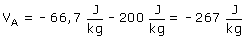

El campo se anula en un punto situado a 1 m de M1 y 3 m de M2
|
|
|

El potencial en A será la suma algebraica de los potenciales creados por las masas M1, M2

Meditación:
¿Cómo puede ser que el campo en un punto sea nulo
y el potencial no?
El campo es la fuerza por unidad de masa EN
el punto. El potencial es el trabajo por unidad de masa que se desplaza
DESDE el punto HASTA el infinito.
En el punto A la unidad de carga positiva está sometida a fuerzas
por parte de M1 y M2 y la resultante no es cero
Aunque no haya fuerza en el punto de partida sí la hay en el resto
del recorrido y por ello el trabajo no es nulo.
Visto de otra forma:

Las componentes del campo son respectivamente
las derivadas del potencial respecto a x, y
Puede ocurrir que, en un punto, la función V no sea nula y que
su derivada sí que lo sea